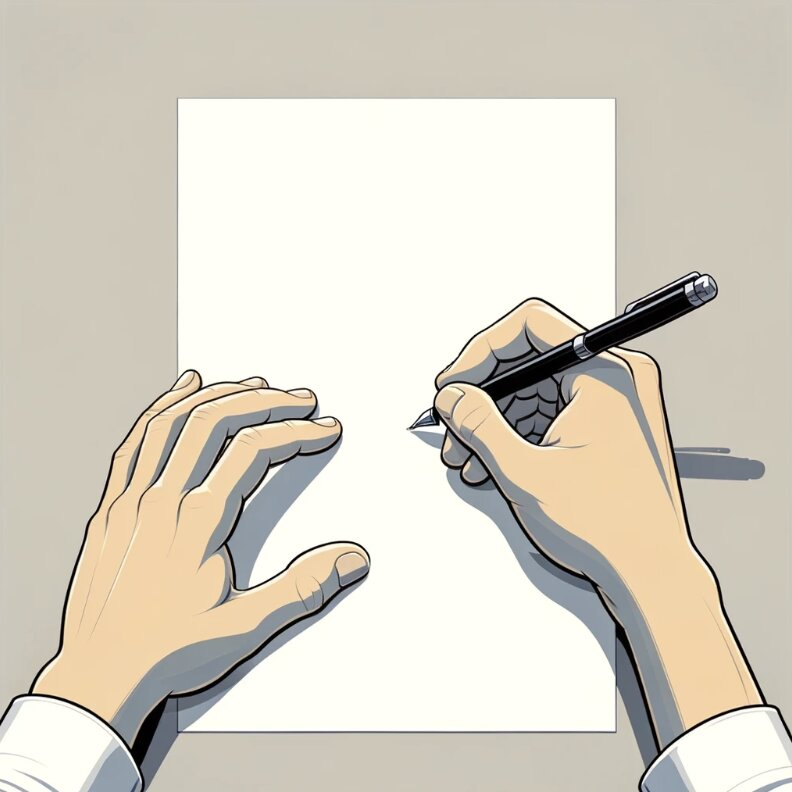

// interactive demo · ~4 minutes
This is a condensed, playable replica of the laboratory experiment in Anticipatory Utility as a Buffer Against Consumption Delays (solo-authored; N = 360, University of Melbourne experimental economics lab). You will go through the screens participants saw, in order: the attention pledge, the mining-game instructions, the incentive-compatibility training, the soil-sample information offer, the waiting task, and — depending on a random draw — an unexpected delay before you learn what the nugget is worth.
Like the real participants, you will be randomly assigned to the No-Delay or Delay condition. Toggle Researcher notes (top right) to see what each screen measures, or Skip to debrief at any time.
Thank you for participating in the experiment. We ask that you give us your full attention throughout the experiment. Please refrain from all other activities, including using your phone and browsing the internet. If we find that you are not paying attention or are violating any rules you will be dismissed without pay.
In this experiment, you will be playing a gold mining game in which a miner will be working on mining some gold for you. Please read all the instructions carefully. A clear understanding of the instructions is critical for making decisions and earning money in the experiment.
There are four parts to the experiment. You will receive instructions for each part and will also be asked to complete a short survey after Part 4.
In this experiment, all payments are expressed in Experimental Currency Units (ECU). Your payments will be converted to Australian dollars (AUD) at a rate of 50 ECU = 1 AUD and will be paid to you privately at the end of the experiment.
You will receive 250 ECU for participating in the experiment, and you may earn additional payments throughout the experiment.
In this experiment, you will participate in a gold mining game. The rules are simple:
If the miner finds a gold nugget, it may be worth anywhere between 680 and 865 ECU.
The value of the gold nugget will be added to your earnings.
For the mining process, a miner randomly picks a spot to start digging. Whether the miner finds a gold nugget depends entirely on the location chosen.
In other words, once the miner picks a spot, the outcome of the mining is determined, and there is nothing you can do to change it.
The mining process should take about 10 minutes, but it may take longer.
At various points throughout the experiment, we will ask you to state the value you place on an item or the amount you are willing to pay to be informed about certain events.
We will use a mechanism that ensures it is always in your best interest to report your value or willingness to pay truthfully.
Please click the "Next" button to see how this works.
Suppose that a person has an item you wish to buy. The exchange can occur at any price between 0 and 100 ECU.
You privately value this item at 70 ECU.
Now, this person, unaware of how much you value the item, will randomly select a price between 0 and 100 ECU and write it down on a piece of paper.

Now, you will decide how much you are willing to pay for the item, if:
Note: if you get the item, you only need to pay the price the person wrote down, not the amount you were willing to pay!
Now, as an exercise, let's suppose the person has written down his price. It is time for you to decide on your willingness to pay. Which number would you choose?
Recall that you value the item at 70.
This amount is too low.
You picked a number less than 70. Let's suppose the person wrote down a price between your number and 70. In this case, you will not get the item, even though you would be better off if you had entered your valuation for the item (70) and obtained the item at the price the person wrote down, which is less than 70.
Please try again.
This amount is too high.
You picked a number larger than 70. Let's suppose the person wrote down a price between 70 and the amount you are willing to pay. In this case, you will get the item, but you will be worse off because you will pay the price the person wrote down, which is higher than the item's worth to you (70).
Please try again.
This amount is the best.
When you choose 70 ECU, regardless of the price the other person wrote down, you will not be worse off.
In the later part of the experiment, we may ask you to specify the price at which you are willing to sell an item.
Similarly, it is in your best interest to simply state how much you value the item.
The miner has just picked a spot and started digging.
The outcome of the mining, i.e., whether the miner will find nothing or a valuable gold nugget, is now determined.
But before he digs any further, the miner will first collect a soil sample and wash it in a river to see if there is any gold dust in it.
If there is gold dust (see picture below), it is very likely that the miner will find a gold nugget, though the value of the gold nugget is still uncertain.
The miner could still find gold in the end, even if there is no gold dust in the pan.
The miner has finished washing the soil.
Before he goes back to digging, he can show you whether there is any gold dust in his pan for a small charge.
Note that the miner will keep digging regardless. The outcome of the mining, which depends solely on the location of the dig, is already determined.
Therefore, whether or not you choose to see what's in his pan will not affect your earnings in any way for the rest of the experiment, except for the cost you pay for the information.
The miner has picked a price (between 0 and 50 ECU) and has written it down on a piece of paper.
Now, please select the amount of ECU you are willing to pay to see if there is any gold dust in the soil sample.
Note that the outcome of this exchange will be based on the mechanism outlined at the beginning of the experiment. It is in your best interest to simply fill in the amount you are willing to pay for this information.
The miner is feeling generous and has written down a price of 0 ECU.
Therefore, you get to see if there is any gold dust in the soil sample for free.
There is indeed gold dust in the soil!
The miner is now almost certain that he will find a gold nugget in the end.
The miner is now ready to start the formal mining process, which should take about 10 minutes.
When you are ready, please click "Next" so the miner can resume mining.
To give you something to do during the wait, there will be 15 rounds of brain teasers. Each brain teaser will be displayed on the screen for 40 seconds, and the next teaser will automatically appear after 40 seconds. Please note that participation in these teasers is optional.
Question:
The mining is taking longer than expected.
The outcome of the mining will be revealed in another 8 minutes.
You can still choose to do some brain teasers while you wait.
Please note that this delay does not mean you need to spend more time in the lab. The experiment will finish within the advertised timeframe.
The mining is now complete. You may proceed to view the outcome.
Congratulations, the miner has found a gold nugget!
However, the value of this nugget remains uncertain and can be anywhere between 680 and 865 ECU.
While you were waiting for the mining to complete in Part 2, you clicked on the "See how the miner is doing" button 0 times. Could you please explain why you wanted to check on the miner.
When it was announced in Part 3 that the mining has been delayed, what was your reaction?
While waiting for the mining to finish in Part 2, how excited were you to learn the outcome of the mining (i.e., the value of the very likely gold nugget)?
Please indicate your level of excitement on a scale of 0 to 10, with 0 representing no excitement at all.
// demo complete